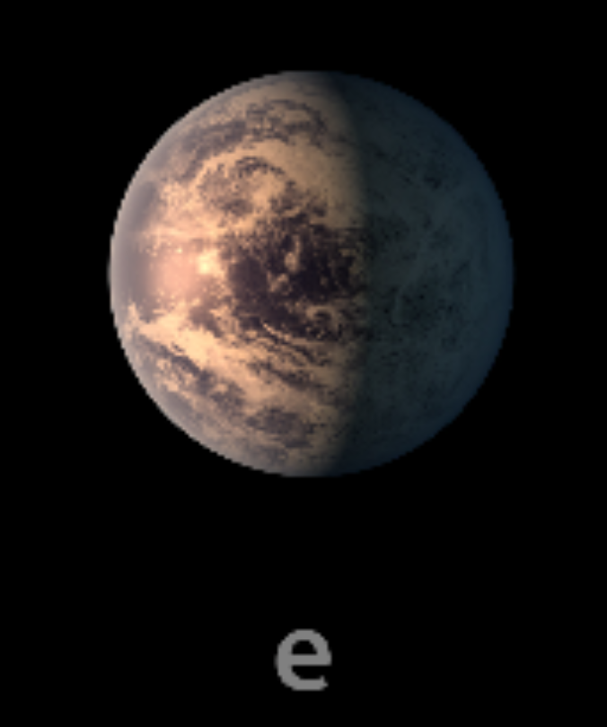

TRAPPIST-1 e

TRAPPIST-1 e es el cuarto planeta del sistema. Es uno de los más interesantes para los estudios sobre habitabilidad.
Características
- Tipo: planeta rocoso.
- Periodo orbital: aproximadamente 6.10 días terrestres.
- Tiene un tamaño parecido al de la Tierra.
- Se encuentra dentro de la zona habitable estimada de su estrella.
Dato interesante
Es uno de los principales objetivos de investigación porque su distancia a la estrella podría permitir temperaturas compatibles con agua líquida, dependiendo de su atmósfera.
¿Podría tener vida?
Es uno de los candidatos más interesantes para investigar condiciones habitables. Sin embargo, todavía no se ha confirmado agua líquida ni vida en su superficie.
Planeta anterior Todos los planetas Siguiente planeta